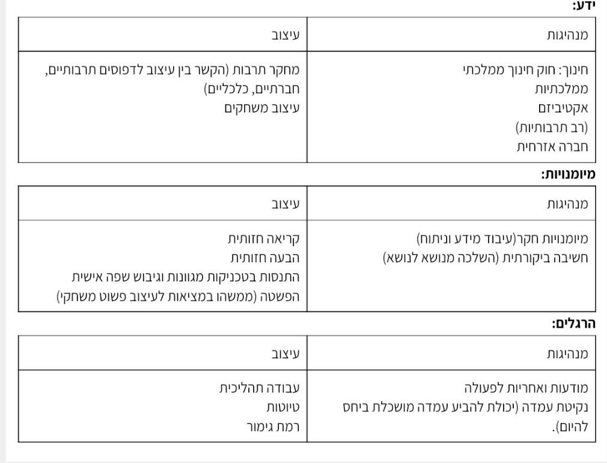
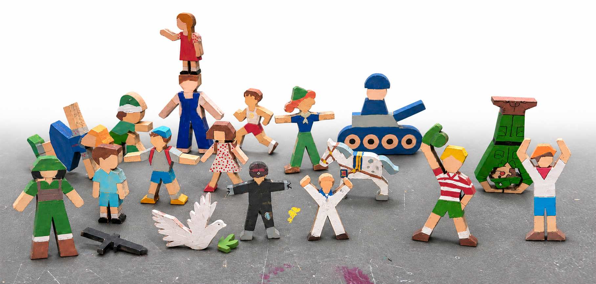

ארץ ישראל שלי
עיצוב ומנהיגות, כיתה י״א
צוות: הלה וענבל
שאלה פורייה: מה האחריות שלי?
משך הפרויקט: מחצית א׳
תוצר ביניים: שחזור משחק לוח ישראלי, מתוך קריאה של חקר תרבות
תוצר: משחק תיקון עכשווי
רציונל הפרויקט
דרך התמקדות במדיום של משחקי לוח ישראליים, התלמידים יעברו מהלך שנע בין מחקר תרבותי־היסטורי, קריאה חזותית וביקורתית של המציאות, חשיבה על התפקיד של החברה האזרחית במדינה ובמיוחד של נוער.
מתוך הצורך בשפה משותפת, העבודות ייבנו סביב ״תימות תיקון״ שייגזרו מחוק חינוך חובה (למשל בין אדם לחברו, ידיעת הארץ, אהבת הדעת וכו׳).
התוצרים הסופיים (משחקי תיקון עכשוויים) יידרשו לנבוע מתוך מחקר תרבותי־היסטורי, פרשנות אישית לתימה כיום, עבודה תהליכית ורמת גימור (יישום כלים בעבודה בעיצוב).
מהלך הפרויקט
כאן יתווסף תיאור מהלך הפרויקט.

01 - הישראלי היפה
עיצוב דמות שילדים שאפו אליה, מתוך פרשנות לגלויות שנה טובה מראשית המדינה.
לחצו על הדמויות המסומנות כדי לגלות את תהליך העבודה.

אפשר לבחור דמות גם באמצעות המקלדת.
02 - מבנים כייצוג של תרבות וחברה
עיצוב חוברת מבנים להרכבה, המציגה את המגוון של ישראל העכשווית, כתגובה למשחקי הרכבה היסטוריים ולחוברת קק״ל Buildem.
03 - מחקר: משחקי לוח ישראליים כביטוי לערכים המשותפים בחברה בראשית המדינה
כאן יתווסף טקסט המחקר.
04 - תוצר: משחק תיקון — עיצוב תגובה עכשווית
כאן יתווסף טקסט על תוצר הפרויקט.